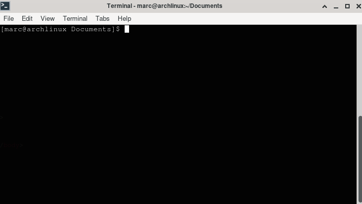
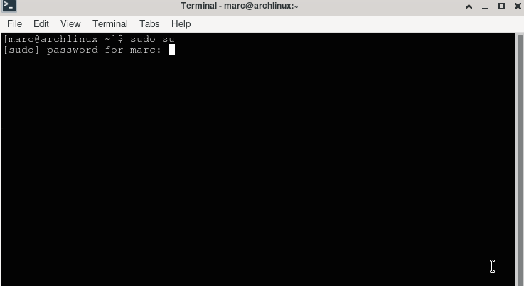
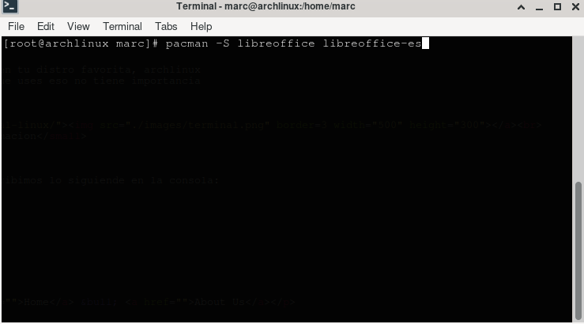
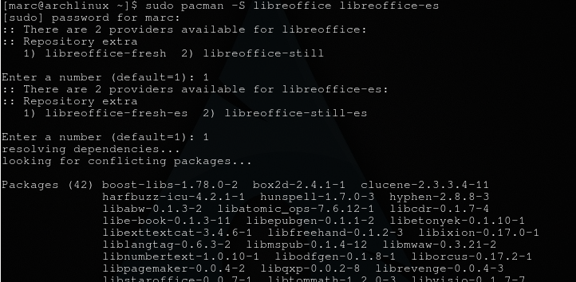
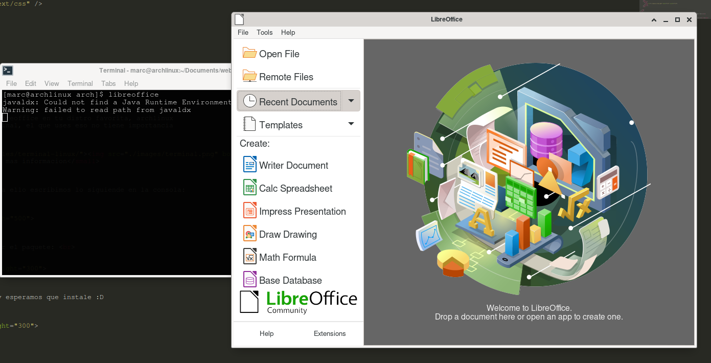

Hola, a continuacion mostrare la instalacion de libreoffice en tu distro favorita, archlinux
Lo primero que debemos hacer es abrir nuestro terminal, el que uses eso no tiene importancia

presiona sobre la imagen si quieres ver mas informacion
Despues de eso nos logueamos como superusuario para ello escribimos lo siguiende en la consola:

Luego escribimos el siguiente comando para instalar el paquete:

Elejimos la opcion 1 las 2 veces que no los pide y esperamos que instale :D

Y listo

Bueno espero te sirviera, hasta el proximo tutorial, nos vemos!.